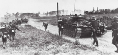
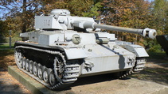

A World at War Again
After World War I ended in 1918, the Allies forced Germany to pay reparations for the war. This along with the great depression gave way for Hitler to gain both power and popularity and in 1939, Hitler started his invasion of Poland kicking off WWII in Europe. This in turn pulled France and Britain into World War two against Germany.
However, this was merely the beginning of the war in Europe. In 1937, Japan officially kicked off its campaign by invading China. Later in the war in 1940, the Axis powers would offically formed as Germany, Italy, and Japan. This was just one year after Hitler's original invasion of Poland.
Key Difference Between The Wars
World War I was fought primarily as trench warfare, each side dug into the ground for months at a time. However the improvements on an invention created late into this war would drastically change how the next was fought. The tank, invented in 1916, would be used to overcome the trench warfare and Germany was the first to use it in a style that would later be called blitzkrieg.